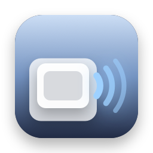
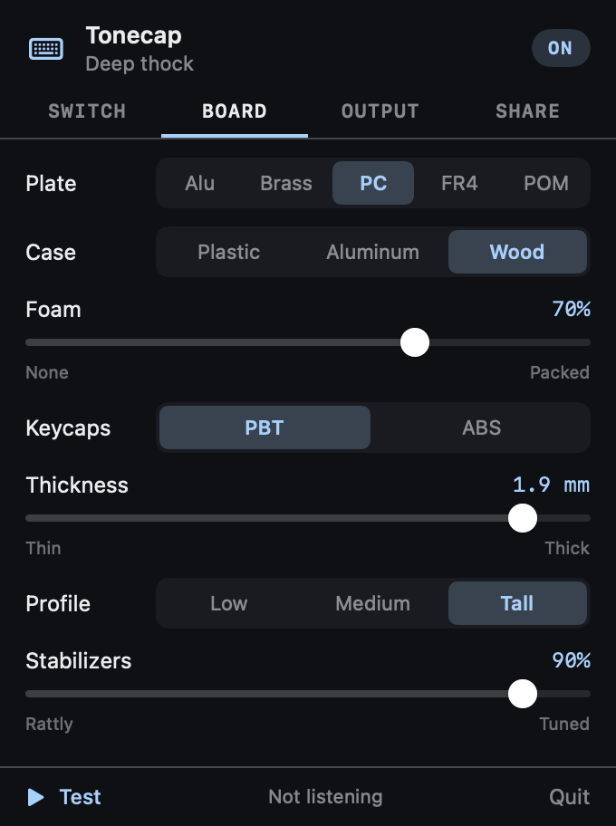

Tonecap
Design your keyboard's sound. Every click and thock here is made from numbers, not recordings: pick a switch, a plate, a case and keycaps, then type to hear it.
Switch between A and B while you type to hear the difference. Both go in the link.
PresetsHear it as you type, anywhere

- A free Mac menu bar app plays your sound as you type in any app, from buffers rendered ahead of time.
- Paste a link from here to bring a build across, or pick a preset.
- Volume, ⌃⌥M to mute, and quiet in the apps you choose, like a video call.
- Never sees what you type. It learns only which key went down or up, plays nothing in password fields, keeps nothing and has no internet access.
free · open source · macos 14+ · no recordings · no internet access
How the sound is made
- A press is a few small events: the stem scraping its housing, a tactile bump or a click, the stem bottoming out, and on wide keys the stabilizer wires knocking. A release is the stem hitting the top.
- Each event rings tuned resonators standing for the keycap, plate, case, desk and spring. A hard hit is a short pulse that reaches the high ones; a soft one only reaches the low ones.
- Materials change pitch, ring and level. Brass rings low and long, polycarbonate is soft and short, foam damps the case, thick PBT is deeper than thin ABS, and wide keys are deeper still.
- Every press is a little different, from a seed, so fast typing doesn't sound like a loop. It's a model to play with, not a copy of any real keyboard.
Questions
Are these real recordings of keyboards?
No. Every sound is made from numbers: short pulses for the stem hitting bottom and top, a click, the scrape of the stem, and tuned resonators for the keycap, plate, case, spring and stabilizers. It's a model you can play with, not a copy of any particular keyboard.
How do I share my keyboard sound?
Click Copy link. The whole build is in the link, after the #, so it opens the same sound for anyone, and nothing is stored on a server.
Can I hear it while I type in other apps?
On a Mac, yes. The free Tonecap menu bar app imports a link from here and plays the sound as you type anywhere. It needs Input Monitoring, learns only which key went down or up, never what you type, and has no internet access. The details are in SECURITY.md.
Is it a Mechvibes alternative?
It does the same job, playing keyboard sounds as you type, in a different way: apps like Mechvibes play recorded sound packs, while Tonecap builds the sound from settings you can change.
Does the playground send my typing anywhere?
No. It runs entirely in your browser, loads only its own files, makes no network requests and keeps nothing. What you type in the test box stays on the page.
Can I use the sound engine in my own project?
Yes. It's one dependency-free JavaScript file, docs/engine/tonecap.js, MIT licensed, with a matching Swift version in the repository.